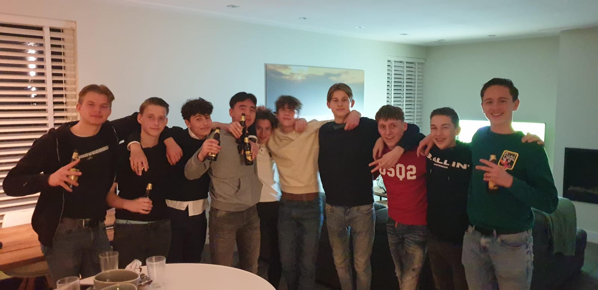
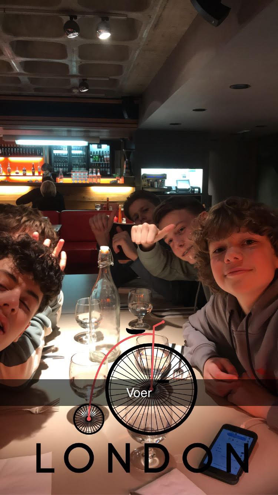
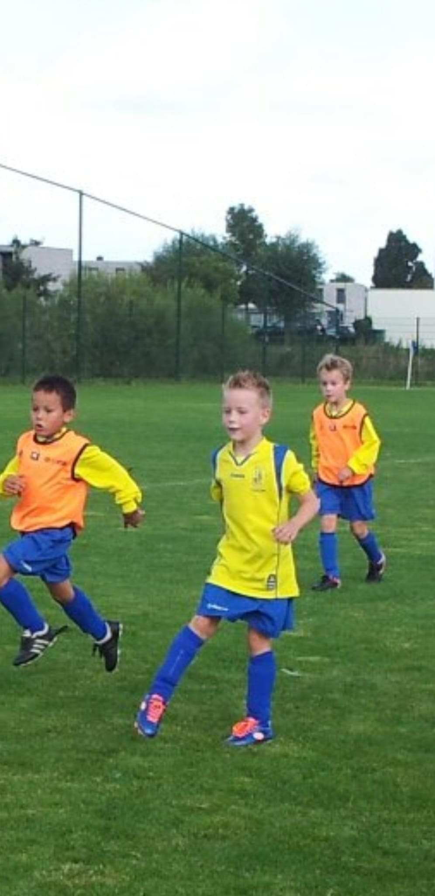
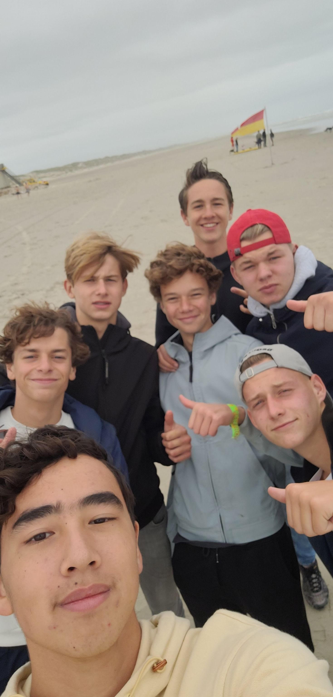

Een vriendengroep van 9 jongens. Allemaal dezelfde leeftijd en een ontzettende hechte vriendengroep, kennen elkaar ongeveer 5 jaar en gaan van de zomer met elkaar op vakantie. Soms enige onenigheid maar dat hoort erbij. Al met al een super leuke en gezellige groep die nog vele jaren zal bestaan.
Daarnaast wonen wij allemaal in Den Bosch. We fietsen altijd samen, hebben altijd feestjes samen en maken de gekste dingen mee. We kennen elkaar namelijk allemaal van school. In het tweede jaar hebben sommige van ons elkaar leren kennen en wisten langzamerhand dat we goed bij elkaar pasten om een groep te worden. We konden lachen met elkaar en spraken best veel met elkaar af om dingen te doen zoals chillen, uitstapjes en bijvoorbeeld feestjes. Hierdoor werd de band van de groep ook closer en closer. Wilt u meer te weten komen hierover kijk vooral de tabbladen die bovenin naast het kopje ¨De Mannen¨ staan!
De vriendengroep bestaat uit 9 jongens van 16/17 jaar. De jongens heten Sem, Nard, Joep, Arthur, Roan, Finn, Jay, Ryan en Jonathan. Zoals eerder vermeld zijn we een groep gevormd via school en hebben we een goede band met elkaar. Als eerste hebben we Sem.
Sem is een leuke sportieve jongen die nu op het 5 vwo zit en daar zijn uiterste best doet. Sem is er echter pas kortgeleden bij gekomen en maakt daarmee deel uit van onze groep.
Na Sem hebben we Nard, Helaas is nard blijven zitten vorig jaar en zit hij dus 4 vwo. Dat maakt niet uit dat Nard altijd vrolijk is. Zonder nard zijn de grappen niet compleet!.
Na Nard hebben we Joep, Joep is een echte OG, hij zit er al vanaf het begin bij en zit ook in vwo 4. Joep houd van dunne jassen dragen en heeft het nooit koud. Daarom noemen we hem ook altijd the coldmaster.
Na joep gehad te hebben komen we bij Arthur, Arthur zit op dit moment in VWO 5 en maakt ook al een lange tijd deel uit van de groep. Arthur is daarbij ook slim en weet wat hij doet. Daarom ook belangrijk voor de groep.
Naast Arthur hebben we Roan. Roan is onze Spanjaard van de groep. Hij komt uit spanje en maakt deel uit van VWO 4. Daarnaast is roan niet vies van een biertje en houd van gezelligheid. Oftewel een leuke spontane jongen.
We hebben natuurlijk ook nog niet te vergeten onze Jay. Jay is een echte vakantieganger en echte Nederlander die houd van BBQ'en. Dit vinden wij altijd super lachen om te zien en daarom noemen we hem ook wel ¨Weber¨.
Bijna bij het eind aangekomen zijn we bij Finn. Finn is onze bitcoinmeester. Hij is erg goed in bitcoin en deelt zijn passie hiermee. Dit is mooi om te zien dat hij dit heel serieus neemt. Daarom vinden wij finn ook een toffe gozer.
Niet te vergeten hebben we onze Ryan. Ryan zit natuurlijk ook op VWO en is gewoon een hartstikke leuke gast met mooie looks en opzich wel een verborgen talentje in Fifa. Kortom een GameFreak.
En om af te sluiten hebben we Jonathan. Jonathan houd heel erg van eten en zit ook op het VWO. Vaak vinden mensen zijn naam te lang dus noemen ze hem simpelweg gewoon Jona wat hem niet uitmaakt.
Natuurlijk hebben onze jongens ook een aantal dingen waar ze goed in zijn. Leuke dingen maar natuurlijk ook serieuze dingen. Hier volgt een klein overzichtje waar de jongens goed in zijn:
Zo zijn Sem, Arthur, Ryan en Jay heel goed in het versieren van dames. Sem en Ryan hebben dan wel een vriendin wat ze natuurlijk goed voor elkaar hebben maar als je dan kijkt naar Arthur en Jay kijkt slaan ze op feestjes en gelegenheden natuurlijk wel wat dames aan de haak. Dus voor eventuele tips kan je altijd terect bij een van deze jongens.
Elke jongen van onze groep voetbalt. De een op een wat hoger niveau als de ander maar we doen het allemaal. Ik adviseer voor eventuele voetbaltips dan toch echt naar Joep want dat is een natuurlijke voetbalster!.
Op het gebied van school zijn we allemaal over het algemeen redelijk slim. We doen wel allemaal VWO maar 3 jongens zijn helaas gesneuveld in VWO 4. Maar natuurlijk gaan we er allemaal vanuit dat we dit jaar gaan halen en dat we uiteindelijk allemaal het papiertje binnen hebben over een aantal jaren
Een uitzondering is dat een van de jongens golft. Namelijk Jonathan, Hij vind dit leuk om te doen en heeft ook wel een redelijk niveau. Zijn passie ligt hier en doe dit uitermate vaak met zijn vader.
Voor de toekomst is ons vooruitzicht nog redelijk wazig. Wij weten nog niet goed wat we allemaal willen qua studie maar het lijkt allemaal een andere kant op te gaan en hoogstwaarschijnlijk in een andere stad gaan studeren. Dat weerhoud ons niet dat we geen contact meer met elkaar gaan hebben. Vooral omdat er nu een lockdown is kunnen we veel afspreken en veel dingen samen doen zolang het volgens de maatregelen gaat. We zullen natuurlijk in de toekomst gewoon samen blijven chillen, stappen en natuurlijk op vakantie gaan!.
Om up to date blijven van onze bezigheden in de toekomst en om alles mee te krijgen van hoe en wat bekijk dan gerust regelmatig de website. We vermelden alles wat we gaan doen en waar we dat gaan doen en geven natuurlijk een feedback van wat we ervan vonden!
Bent u nog meer geinteresseerd in onze vriendengroep en lijkt het je dan leuk om contact met ons op te nemen of ooit iets met ons te gaan doen. Dat kan! neem dan contact op via de onderstaande contactmogelijkheden en stuur een mail naar ons of een eventueel telefoontje en dan laten wij zo spoedig mogelijk een reactie achter en wie weet zien we jou dan wel binnenkort!.
wilt u ons bereiken via de mail. Dat kan stuur een mailtje naar het onderstaande emailadres:
elstjonathan2004@gmail.comDaarnaast zijn wij telefonisch bereikbaar vanaf 8:30 tot 18:00 op elke werkdag.
+31 6 19998850 